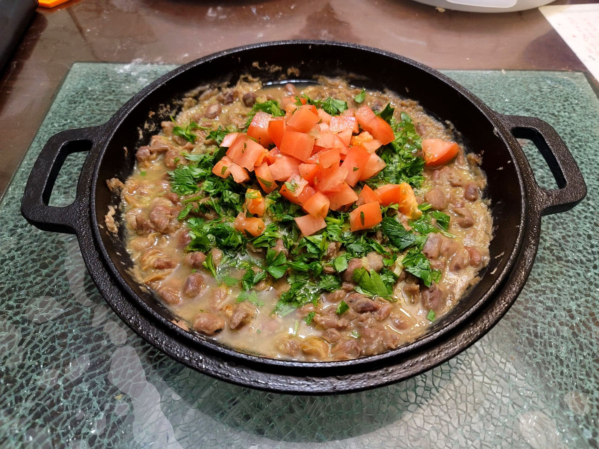

Ful Mudammas

Ingredients:
- 1 cup Dried fava beans + 5 cups Water, OR 2 14 oz cans Fava beans
- 1/2 Water
- 1-2 Mild peppers, like jalapeños, chopped
- 2 cloves Garlic, chopped
- 1 Lemon, juiced
- 1 tsp Cumin
- Salt, to taste
- Olive oil, to taste
- 1 cup Parsley, chopped
- 1 Tomato, diced
Instructions:
- If using dried beans, rinse the beans and then place in a bowl covered with water. Let soak the night prior. Then place into a pot with 5 cups water and bring to a boil. Lower the heat to a simmer and cook, covered, for about 1-2 hours, or until done and tender. Strain from the water and reserve the beans.
- In a mortar and pestle, add in the garlic and pepper. Mash into a paste. Then mix in the lemon. Reserve.
- Into a 10" cast iron skillet over medium heat, add in the beans and 1/2 water. Mash the beans to preference. Add the cumin and salt to taste.
- Pour the garlic pepper paste over the beans. Then drizzle with olive oil to taste. Top with the parsley and then with the tomato. Serve immediately with warm pita and/or vegetables.